自然数是在人类的生产和生活实践中逐渐产生的。人类认识自然数的过程是相当长的。在远古时代，人类在捕鱼、狩猎和采集果实的劳动中产生了计数的需要。起初人们用手指、绳结、刻痕、石子或木棒等实物来计数。例如：表示捕获了3只羊，就伸出3个手指；用5个小石子表示捕捞了5条鱼；一些人外出捕猎，出去1天，家里的人就在绳子上打1个结，用绳结的个数来表示外出的天数。
这样经过较长时间，随着生产和交换的不断增多以及语言的发展，渐渐地把数从具体事物中抽象出来，先有数目1，以后逐次加1，得到2、3、4、5、…这样逐渐产生和形成了自然数。因此，可以把自然数定义为，在数物体的时候，用来表示物体个数的1、2、3、4、5、6、…叫做自然数。自然数的单位是“1”，任何自然数都是由若干个“1”组成的。自然数有无限多个，1是最小的自然数，没有最大的自然数。
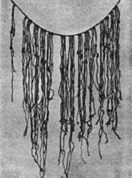
古巴比伦大约是公元前2000年建立的国家，叫巴比伦王国。那里的民族复杂，统治者经常更换。但这里的人民对数学贡献却很大。
巴比伦人对天文学很有研究，1个星期有7天是巴比伦人提出来的；1小时有60分，1分钟有60秒是巴比伦人提出的；将圆周分为360度，每1度是60分，每1分是60秒是巴比伦人最早提出的。
也许你会问，巴比伦人为什么这样喜欢60？这是因为巴比伦人使用60进制。许多文明古国采用10进制，因为人长有10个手指头，数完了就要考虑进位。南美的印第安人，数完了10个手指头，又接着数10个脚趾，他们就使用20进制。
巴比伦人为什么采用60进制呢？人的身上好像没有和60有关的东西。然而对于这个问题却有两种截然不同的见解。
一种见解认为，巴比伦人最初以360天为一年，将圆周分为360度，而圆内接正六边形的每边都等于圆的半径，每边所对的圆心角恰好等于60度，60进制由此而生。
另一种见解则认为，从出土的泥板上可知，巴比伦人早就知道一年有365天。他们选择60进制是因为60是许多常用数（比如2、3、4、5、6、10…）的倍数。特别是60=12×5，其中12是一年的月份数，5是一只手的手指数。
上述两种见解，毕竟是推测，事实究竟如何？也许随着对巴比伦遗址的发掘，人们会得到更多的史料，从中找到答案。
通常，我们把1、2、3、4、…、9、0称为“阿拉伯数字”。其实，这些数字并不是阿拉伯人创造的，它们最早产生于古代的印度。可是人们为什么又把它们称为“阿拉伯数字”呢？
据传早在公元7世纪时，阿拉伯人渐渐地征服了周围的其他民族，建立起一个东起印度，西到非洲北部及西班牙的萨拉森大帝国。到后来，这个大帝国又分裂成为东、西两个国家。由于两个国家的历代君主都注重文化艺术，所以两国的都城非常繁荣昌盛，其中东都巴格达更胜一筹。这样，西来的希腊文化，东来的印度文化，都汇集于此。阿拉伯人将两种文化理解并消化，形成了新的阿拉伯文化。
大约在公元750年左右，有一位印度的天文学家拜访了巴格达王宫，把他随身带来的印度制作的天文表献给了当时的国王。印度数字1、2、3、4…以及印度式的计算方法，也就在这个时候介绍给了阿拉伯人。因为印度数字和计算方法简单而又方便，所以很快就被阿拉伯人所接受了，并且逐渐地传播到欧洲各个国家。
在漫长的传播过程中，印度创造的数字就被称为“阿拉伯数字”了。到后来，人们虽然弄清了“阿拉伯数字”的来龙去脉，但由于大家早已习惯了“阿拉伯数字”这一叫法，所以也就沿用下来了。
在我国古代，人们很早就掌握了数的除法运算，自公元前春秋战国时代之前我国出现了用“九九”表计算乘法以后，人们也总结了用口诀来计算除法的方法。《孙子算经》上说：“凡除之法，与乘正异。”当时我国主要是用算筹和口诀来计算除法的。
我们现在用的除法符号“÷”，是一位瑞士学者雷恩（1622~1676）于1659年在一本代数书中首先使用的。1668年，该书被译成英文出版，这个记号得以流行起来，直到现在。因此除号“÷”被称为雷恩记号。因为“÷”号在欧洲大陆曾长期被用来表示减法，为了与减法区别，后来一位德国数学家莱布尼兹（1646~1716）在他的一篇论文《组合的艺术》中首次用“：”作除号，与当时流行的比号一致。后来也逐渐通用，现在世界有些国家如德国、俄罗斯仍然用“：”作除号。
漏刻是我国古代一种计量时间的仪器。最初，人们发现陶器中的水会从裂缝中一滴一滴地漏出来，于是专门制造出一种留有小孔的漏壶，把水注入漏壶内，水便从壶孔中流出来，另外再用一个容器收集漏下来的水，在这个容器内有一根刻有标记的箭杆，相当于现代钟表上显示时刻的钟面，用一个竹片或木块托着箭杆浮在水面上，容器盖的中心开一个小孔，箭杆从盖孔中穿出，这个容器叫做“箭壶”。随着箭壶内收集的水逐渐增多，木块托着箭杆也慢慢地往上浮，古人从盖孔处看箭杆上的标记，就能知道具体的时刻。
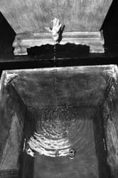
后来古人发现漏壶内的水多时，流水较快，水少时流水就慢，显然会影响计量时间的精度。于是在漏壶上再加一只漏壶，水从下面漏壶流出去的同时，上面漏壶的水即源源不断地补充给下面的漏壶，使下面漏壶内的水均匀地流入箭壶，从而取得比较精确的时刻。
现存于北京故宫博物院的铜壶漏刻是公元1745年制造的，最上面漏壶的水从雕刻精致的龙口流出，依次流向下壶，箭壶盖上有个铜人仿佛抱着箭杆，箭杆上刻有96格，每格为15分钟，人们根据铜人手握箭杆处的标志来报告时间。
众所周知，“刻”可以表示时间。例如，成语“一刻千金”和“刻不容缓”中的“刻”都是表示时间的，另外，在表示具体时间时，如3点15分也可叫作3点一刻。那么，为什么一刻等于15分呢？
我国古代没有钟表，人们靠“铜壶滴漏”来计算时间的长短，这种用来计时的铜壶叫漏壶。漏壶的底部有个孔，壶中竖着一支带有100个刻度的箭。壶中装满水后，水从孔中一滴一滴往下漏，一天刚好漏完100刻度的水。
到了清朝，钟表从国外传入我国，计时方法为一天24小时。人们根据漏壶一天漏掉的100刻度的水，计算出箭上一个刻度所代表的时间：
60×24÷100=14.4（分）
14.4分接近15分，所以，人们就把一个刻度代表的时间定为15分。就这样，“刻”成了计算时间的单位，即一刻等于15分。
学会数数，那可是人类经过成千上万年的奋斗才得到的结果。如果我们穿过“时间隧道”来到二三百万年前的远古时代，和我们的祖先——类人猿在一起，我们会发现他们根本不识数，他们对事物只有“有”与“无”这两个数学概念。类人猿随着直立行走使手脚分工，通过劳动逐步学会使用工具与制造工具，并产生了简单的语言，这些活动使类人猿的大脑日趋发达，最后完成了由猿向人的演化。这时的原始人虽没有明确的数的概念，但已由“有”与“无”的概念进化到“多”与“少”的概念了。“多少”比“有无”要精确。这种概念精确化的过程最后就导致“数”的产生。
上古的人类还没有文字，他们用的是结绳记事的办法（《周易》中就有“上古结绳而治，后世圣人，易之以书契”的记载）。遇事在草绳上打一个结，一个结就表示一件事，大事大结，小事小结。这种用结表事的方法就成了“符号”的先导。长辈拿着这根绳子就可以告诉后辈某个结表示某件事。这样代代相传，所以一根打了许多结的绳子就成了一本历史教材。20世纪初，居住在琉球群岛的土著人还保留着结绳记事的方法。而我国西南的一个少数民族，也还在用类似的方法记事，他们的首领有一根木棍，上面刻着的道道就是用于记事的。
又经过了很长的时间，原始人终于从一头野猪，一只老虎，一把石斧，一个人……这些不同的具体事物中抽象出一个共同的数字——“1”。数“1”的出现对人类来说是一次大的飞跃。人类就是从这个“1”开始，又经过很长一段时间的努力，逐步地数出了“2”、“3”……，对于原始人来说，每数出一个数（实际上就是每增加一个专用符号或语言）都不是简单的事。直到本世纪初，人们还在原始森林中发现一些部落，他们数数的本领还很低。例如在一个马来人的部落里，如果你去问一个老头的年龄，他只会告诉你：“我8岁。”这是怎么回事呢？因为他们还不会数超过“8”的数。对他们来说，“8”就表示“很多”。有时，他们实在无法说清自己的年龄，就只好指着门口的棕榈树告诉你：“我跟它一样大。”
这种情况在我国古代也曾发生并在古汉语中留下了痕迹。比如“九霄”指天的极高处，“九派”泛指江河支流之多，这说明，在一段时期内，“九”曾用于表示“很多”的意思。
总之，人类由于生产、分配与交换的需要，逐步得到了“数”，这些数排列起来，可得
1，2，3，4，…，10，11，12，…
这就是自然数列。
可能由于古人觉得，打了一只野兔又吃掉，野兔已经没有了，“没有”是不需要用数来表示的。所以数“0”出现得很迟。换句话说，零不是自然数。
后来由于实际需要又出现了负数。我国是最早使用负数的国家。西汉（公元前2世纪）时期，我国就开始使用负数。《九章算术》中已经给出正负数运算法则。人们在计算时就用两种颜色的算筹分别表示正数和负数，而用空位表示“0”，只是没有专门给出0的符号。“0”这个符号，最早在公元5世纪由印度人阿尔耶婆哈答使用。
到这时候，“整数”才完整地出现了。
今天人们都能用正负数来表示两种相反意义的量。例如若以冰点的温度表示0℃，则开水的温度为+100℃，而零下10℃则记为-10℃。若以海平面为0点，则珠穆朗玛峰的高度约为+8848米，最深的马里亚纳海沟深约-11034米。在日常生活中，人们常用“+”表示收入，用“-”表示支出。可是在历史上，负数的引入却经历了漫长而曲折的道路。
古人在实践活动中遇到了一些问题：如两人相互借用东西，对借出方和借入方来说，同一东西具有不同的意义；再如从同一地点，两人同时向相反方向行走，离开出发点的距离即使相同，但其表示的意义却不同。久而久之，古人意识到仅用数量表示一个事物是不全面的，似乎还应加上表示方向的符号。因此为了表示具有相反意义的量和解决被减数小于减数等问题，逐渐产生了负数。
我国是世界上最早使用负数概念的国家。《九章算术》中已经开始使用负数，而且明确指出若“卖”是正，则“买”是负；“余钱”是正，则“不足钱”是负。刘徽注《九章算术》，定义正负数为“两算得失相反”，同时还规定了有理数的加、减法则，认为：“正、负术曰：同名相益，异名相除。”
这“同名”、“异名”，即现在的“同号”、“异号”，“除”和“益”则是“减”和“加”，这些思想，西方要迟于中国八九百年才出现。
印度在公元7世纪才采用负数，公元628年，印度的《婆罗摩修正体系》一书中，把负数解释为负债和损失。在西方，直到1484年，法国的舒开才给出了二次方程的一个负根。1544年，德国的史提菲把负数定义为比任何数都小的数。1545年，意大利的卡当著《大法》，成为欧洲第一部论述负数的著作。虽然负数早已出现在人们的计算过程中，但却迟迟得不到学术界的承认。
直到17世纪，数学、力学、天文学获得广泛发展，使用负数可以大大简化计算，所以负数才正式进入了数学。特别是1637年，法国数学家笛卡尔发明了解析几何学，建立了坐标点，将平面点与负数、零、正数组成的实数对应起来，使负数得到了解释，从而加速了人们对负数的承认。但直到19世纪，德国数学家魏尔斯特拉斯等人为整数奠定了逻辑基础以后，负数才在现代数学中获得巩固的地位。
表示计算方法的符号叫做运算符号。如四则计算中的“+”、“-”、“×”、“÷”等。
加号“+”是加法符号，表示相加。
减号“-”是减法符号，表示相减。
“+”与“-”这两个符号是德国数学家威特曼在1489年他的著作《简算与速算》一书中首先使用的。在1514年被荷兰数学家赫克作为代数运算符号，后又经法国数学家韦达的宣传和提倡，开始普及，直到1630年，才获得大家的公认。
乘号“×”是乘法符号，表示相乘。1631年，英国数学家奥特轩特提出用符号“×”表示相乘。乘法是表示增加的另一种方法，所以把“+”号斜过来。另一个乘法符号“·”是德国数学家莱布尼兹首先使用的。
除号“÷”是除法符号，表示相除。用这个符号表示除法首先出现在瑞士学者雷恩于1656年出版的一本代数书中。几年以后，该书被译成英文，才逐渐被人们认识和接受。
我们每个人都有两只手，十个手指，除了残疾人与畸形者。那么，手指与数学有什么关系呢？
手指是人类最方便、也是最古老的计数器。
让我们再穿过“时间隧道”回到几万年前吧，一群原始人正在向一群野兽发动大规模的围猎。只见石制箭镞与石制投枪呼啸着在林中掠过，石斧上下翻飞，被击中的野兽在哀嚎，尚未倒下的野兽则狼奔豕突，拼命奔逃。这场战斗一直延续到黄昏。晚上，原始人在他们栖身的石洞前点燃了篝火，他们围着篝火一面唱一面跳，欢庆着胜利，同时把白天捕杀的野兽抬到火堆边点数。他们是怎么点数的呢？就用他们的“随身计数器”吧。一个，二个，……，每个野兽对应着一根手指。等到十个手指用完，怎么办呢？先把数过的十个放成一堆，拿一根绳，在绳上打一个结，表示“手指这么多野兽”（即十只野兽）。再从头数起，又数了十只野兽，堆成了第二堆，再在绳上打个结。这天，他们的收获太丰盛了，一个结，二个结，……，很快就数到手指一样多的结了。于是换第二根绳继续数下去。假定第二根绳上打了3个结后，野兽只剩下6只。那么，这天他们一共猎获了多少野兽呢？1根绳又3个结又6只，用今天的话来说，就是：
1根绳=10个结，1个结=10只。
所以1根绳3个结又6只=136只。
你看，“逢十进一”的10进制就是这样得到的。现在世界上几乎所有的民族都采用了十进制，这恐怕跟人有十根手指密切相关。当然，过去有许多民族也曾用过别的进位制，比如玛雅人用的是20进制。我想，大家一定很清楚这是什么原因：他们是连脚趾都用上了。我国古时候还有五进制，你看算盘上的一个上珠就等于五个下珠。而巴比仑人则用过60进制，现在的时间进位，还有角度的进位就用的60进制，换算起来就不太方便。英国人则用的是12进制（1英尺=12英寸，1箩=12打，1打=12个）。
大家再动动脑筋，想一想，在我们的日常生活中还用到过什么别的进制吗？
小数是十进制分数的另一种表示方法。有了小数，记数就更方便了。如圆周率近似值3.1416，若用分数表示，书写、计算都很麻烦。
有位著名美国数学家说：“近代计算的奇迹般的动力来自三项发明：印度计数法，十进分数和对数。”这里所说的十进分数就是指小数。
最早使用小数的是中国人。公元3世纪，我国魏晋时期刘徽在注《九章算术》时就指出，开方不尽时，可用十进制分数（小数）来表示，比西方早1300年。元朝刘瑾（1300年左右）著《律吕成书》中记106368.6312为：把小数部分降低一格，可以说是世界上最早的小数表示法。
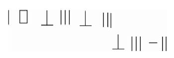
中国之外第一个应用小数的是阿拉伯人卡西，他用十进分数（小数）给出了π的17位有效数值。在欧洲，比利时人斯蒂文于1585年第一次明确地阐述了小数的理论，他把32.57记为：
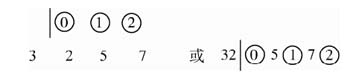
1492年法国人佩洛斯出版的算术书中首次应用了小数点“.”，但他的意思是做除法时，如果除数是10的倍数，例如12356÷600，先将末两位用点分开然后除以6，即123.56÷6，仅仅为了做除法时的方便。
直到1608年意大利人克拉乌斯出版的代数书中才明确地以小点“.”作为整数部分和小数部分的分界，即现代用法。
同时也有人用“，”来作小数点的记号。直到19世纪末，小数点还有种种写法，如2.5可写为25；2.5；2·5；2△5等。
现代小数点的使用大体分为两大派，欧洲大陆派（德国、法国、苏联等）用逗号作小数点，圆点“·”用作乘法记号，而不用“×”号，因它易与“x”相混。英美派小数点用圆点“.”，逗号用来作分节号（每三位分为一节）。如一亿五千万，记作150，000，00，而大陆派则写作150000000，不用分节号而每三位数空一格。
无论是东方还是西方，人们对小数的认识，都经历了几百年甚至上千年的演变。
表示数与数、式与式或式与数之间的某种关系的特定符号，叫作关系符号。有等号，大于号，小于号，约等于号，不等号等等。
等号：表示两个数或两个式或数与式相等的符号，记作“=”，读作“等于”。例如：3+2=5，读作“三加二等于五”。第一个使用符号“=”表示相等的是英国数学家雷科德。
大于号：表示一个数（或式）比另一个数（或式）大的符号，记作“＞”，读作“大于”。例如：6＞5，读作“六大于五”。
小于号：表示一个数（或式）比另一个数（或式）小的符号，记作“＜”，读作“小于”。例如：5＜6，读作“五小于六”。大于号和小于号是英国数学家哈里奥特于17世纪首先使用的。
约等于号：表明两个数（或式）大约相等的符号，记作“≈”，读作“约等于”。例如：π≈3.14，读作“π约等于三点一四”。
不等号：表示两个数（或式）不相等的符号，记作“≠”，读作“不等于”。例如：4+3≠9，读作“四加三不等于九”。
可以说，自然数是从表示“有”多少的需要中产生的。在实践中还常常遇到没有物体的情况。例如：盘子里一个苹果也没有。为了表示“没有”，就产生了一个新的数“零”。
“零”是一个数，记作“0”，“0”是整数，但不是自然数，它比所有的自然数都小。“0”作为一个单独的数，不仅可以表示“没有”，而且是一个有完全确定意义的数，是一个起着很多重要作用的数。具体作用有：
（1）表示数的某位上没有单位，起到占位的作用。例如：103.04，表示十位和十分位上一个单位也没有。0.10为近似数时，表示精确到百分位。5.00元表示特别的单价是5元整。
（2）表示某些数量的界限。例如在数轴上“0”是正数与负数的界限。“0”既不是正数，也不是负数。在摄氏温度计上“0”是零上温度与零下温度的分界。
（3）表示温度。在通常情况下水结冰的温度为“0”摄氏度。说今天的气温为零度，并不是指今天没有温度。
（4）表示起点。如在刻度尺上，刻度的起点为“0”。从甲城到乙城的公路上，靠近路边竖有里程碑，每隔1千米竖一个，开始第一个桩子上刻的是“0”，表明这是这段公路的起点。
在四则运算中，零有着特殊的性质。
（1）任何数与0相加都得原来的数。例如：5+0=5，0+32=32。
（2）任何数减去0都得原来的数。例如：5-0=5，42-0=42。
（3）相同的两个数相减，差等于0。例如：5-5=0，428-428=0。
（4）任何数与0相乘，积等于0。例如：5×0=0，0×78=0。
（5）0除以任何自然数，商都等于0。例如：0÷5=0，0÷345=0。因此0是任意自然数的倍数。
（6）0不能作除数。因为任何自然数除以零，都得不到准确的商。例如：
5÷0，找不到一个数与0相乘可以得5。零除以零时有无数个商，因为任何数与0相乘都能得到0，所以像5÷0、0÷0都无意义。
一个数的末一位数能被2和5整除，这个数就能被2和5整除。具体地说，个位上是0、2、4、6、8的数，都能被2整除。个位上是0或是5的数，都能被5整除。
例如：128、64、30的个位分别是8、4、0，这3个数都能被2整除。
281、165、79的个位分别是1、5、9，那么这3个数都不能被2整除。
在上面的6个数中，30和165的个位分别是0和5，这两个数能被5整除，其他各数均不能被5整除。
一个数各个数位上的数的和能被3或9整除，这个数就能被3或9整除。
例如：7+4+1+6=18，18能被3整除，也能被9整除，所以7416能被3整除，也能被9整除。
再如：5739各个数位上的数之和是5+7+3+9=24，24能被3整除，但不能被9整除，所以5739能被3整除，而不能被9整除。
一个数的末两位数能被4或25整除，这个数就能被4或25整除。具体地说，一个数的末两位数是0，或是4的倍数，这个数就能被4整除。一个数的末两位数是0或是25的倍数，这个数就是25的倍数，能被25整除。
例如：324、4200、675，三个数中，324的末两位数是24，24是4的倍数，所以324能被4整除。675的末两位数是75，75是25的倍数，所以675能被25整除，4200的末两位数都是0，所以4200既能被4整除，又能被25整除。
一个数的末三位数能被8或125整除，这个数就能被8或125整除。具体地说，一个数的末三位数是0或是8的倍数，就能被8整除；一个数的末三位数是0或是125的倍数，就能被125整除。
例如：2168、32000、1875，3个数中，2168的末三位数是168，168是8的倍数，所以2168能被8整除。1875的末三位数是875，875是125的倍数，所以1875能被125整除。32000的末三位数都是0，所以32000既能被8整除，又能被125整除。
一个数末三位数字所表示的数与末三位以前的数字所表示的数的差（以大减小），能被7、11、13整除，这个数就能被7、11、13整除。
例如：128114，由于128-114=14，14是7的倍数，所以128114能被7整除。94146，由于146-94=52，52是13的倍数，所以94146能被13整除。64152，由于152-64=88，88是11的倍数，所以64152能被11整除。
能被11整除的数，还可以用“奇偶位差法”来判定。一个数奇位上的数之和与偶位上的数之和相减（以大减小），所得的差是0或是11的倍数时，这个数就能被11整除。
例如：64152，奇位上的数之和是6+1+2=9，偶位上的数之和是4+5=9，9-9=0，判断出64152能被11整除。
我们再追溯到五千到八千年前看一看，这时，四大文明古国都早已从母系社会过渡到父系社会了，生产力的发展导致国家雏形的产生，生产规模的扩大则刺激了人们对大数的需要。比如某个原始国家组织了一支部队，国王陛下总不能老是说：“我的这支战无不胜的部队共计有9名士兵！”于是，慢慢地就出现了“十”、“百”、“千”、“万”这些符号。在我国商代的甲骨文上就有“八日辛亥允戈伐二千六百五十六人”的刻文，即在八日辛亥那天消灭敌人共计2656人。在商周的青铜器上也刻有一些大的数字。以后又出现了“亿”、“兆”这样的大数单位。
而在古罗马，最大的记数单位只有“千”。他们用M表示一千。“三千”则写成“MMM”。“一万”就得写成“MMMMMM-MMMM”。真不敢想象，如果他们需要记一千万时怎么办，难道要写上一万个M不成？
总之，人们为了寻找记大数的单位是花了不少脑筋的。笔者幼时在农村读私塾，私塾先生告诉我们这些懵懂顽童：“最大的数叫‘猴子翻跟斗’。”这位私塾先生可能认为孙悟空一个跟斗翻过去的路程是最最远的，不能再远了，所以完全可以用“猴子翻跟斗”来表示最大的数。在古印度，使用了一系列大数单位后，最后的最大的数的单位叫做“恒河沙”。是呀，恒河中的沙子你数得清吗！
然而，古希腊有一位伟大的学者，他却数清了“充满宇宙的沙子数”，那就是阿基米德。他写了一篇论文，叫做《计沙法》，在这篇文章中，他提出的记数方法，同现代数学中表示大数的方法很类似。他从古希腊的最大数字单位“万”开始，引进新数“万万（亿）”作为第二阶单位，然后是“亿亿”（第三阶单位），“亿亿亿”（第四阶单位），等等，每阶单位都是它前一阶单位的1亿倍。
阿基米德的同时代人、天文学家阿里斯塔克斯曾求出地球到天球面距离10000000000斯塔迪姆（1斯塔迪姆=188米），这个距离当然比现在我们所认识的宇宙要小得多，这才仅仅是太阳到土星的距离。阿基米德假定这个“宇宙”里充满了沙子。然后开始计算这些沙子的数目。最后他写道：
“显然，在阿里斯塔克斯计算出的天球里所能装入的沙子的粒数，不会超过一千万个第八阶单位。”如果要把这个沙子的数目写出来，就是在1后边写上63个0：1000000000000000000000000000000000000000000000000000000000000000。这个数，我们现在可以把它写得简单一些，即写成1×1063 。而这种简单的写法，据说是印度某个不知名的数学家发明的。
现在，我们还可更进一步把这种方法推广到记任何数，例如：32000000就可记为3.2×107 ，而0.0000032则可记为3.2×10-6 。这种用在1与10间的一个数乘以10的若干次幂的记数方法就是“科学记数法”。这种记数法既方便，又准确，又简洁，还便于进行计算，所以得到了广泛的使用。
文学作品有“回文诗”，如“山连海来海连山”，不论你顺读，还是倒过来读，它都完全一样。有趣的是，数学王国中，也有类似于“回文”的对称数！
先看下面的算式：
11×11=121
111×111=12321
1111×1111=1234321
…………
由此推论下去，12345678987654321这个17位数，是由哪两数相乘得到的，也就不言而喻了！
瞧，这些数的排列多么像一列士兵，由低到高，再由高到低，整齐有序。
还有一些数，如：9461649，虽高低交错，却也左右对称。假如以中间的一个数为对称轴，数字的排列方式，简直就是个对称图形了！因此，这类数被称为“对称数”。
对称数排列有序，整齐美观，形象动人。
那么，怎样能够得到对称数呢？
经研究，除了上述11、111、1111、…自乘的积是对称数外，把某些自然数与它的逆序数相加，得出的和再与和的逆序数相加，连续进行下去，也可得到对称数。
15851便是对称数。
再如：7234
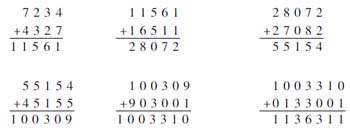
对称数也出现了：1136311。
对称数还有一些独特的性质：
1.任意一个数位是偶数的对称数，都能被11整除。如：
77÷11=7 1001÷11=91
5445÷11=495 310013÷11=28183
2.两个由相同数字组成的对称数，它们的差必定是81的倍数。如：
9779-7997=1782=81×22
43234-34243=8991=81×111
63136-36163=26973=81×333
“时”是表示时刻的，是指什么时候。
“小时”是表示时间长短的，是计量时间的单位。
时刻是指钟面上的时针、分针、秒针所指的那一瞬间、一刹那所占的某一个特定的位置。它只表示先后顺序，没有大小长短之分，不能用来计算。如上午8时，指某一天钟面上的时针指到“8”，分针指到“12”的那一瞬间。
而时间是指两个时刻之间所经过的那一段时间，或者说是两个时刻之间所隔的那一段时间。如下午2时到下午6时，这两个不同时刻之间的间隔是4小时。
再如小明写作业用去了30分钟，就是说他从开始写作业到写完作业所经过的时间是30分钟。比小时小的单位有分、秒。因为时间是指两个时刻之间经过的那段时间，所以时间有长短、多少之分，可以用来计算。
“时”和“小时”的区别还可以在直线上表示。如：
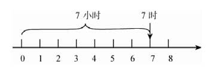
从图中可以看出，表示“时”的数是直线上的某一个点，表示“小时”的数则是这条直线上两点之间的一条线段。
“时”和“小时”这两个词不能通用。用“时”的地方一定用“时”，不能用“小时”。如果该用“小时”的地方但不会与“时”混淆，可以将“小”省略用“时”，但表示的一定是“时间”。比如：1时=60分，这里的“时”指的是“小时”。
如果你仔细留意一下西方印刷品上的手表广告，就会发现一个奇特现象：不管什么品牌的手表，广告中手表上表针差不多都定在10时10分的位置上。在强调“独特性”的当今商业世界，手表广告为何会出现如此高度的“统一”呢？
美国华盛顿亨利——考夫曼广告公司总经理迈克·卡尔伯里说：“它意味着热烈的包容的情绪，就像一个人张开双臂。它是象征胜利的‘V’字。即使消费者没有注意到表针的位置，它也会有一种令人心胸开阔的效果。”
做钟表生意和钟表广告的商家对此还有各种各样的解释：它看起来更像一张快乐的脸；它有“积极向上”的意思；它是模仿驾驶员手握方向盘的恰当姿势……
可是，为什么广告中数字显示的手表的读数也定在10∶10上呢？谁能解开这个谜？
“千千万”是形容数量多，“万万千”也是形容数量多。
有一个小问题：是“千千万”多呢，还是“万万千”多？
顾名思义，应该有：
千千万=1000×1000×10000=1010 ，
万万千=10000×10000×1000=1011 。
由此可见，从严格数量上说，“千千万”是100亿，“万万千”是1000亿，“万万千”是“千千万”的10倍。
在文学语言中，说起千呀万呀这类大数，通常只是泛指很多很多。如果“千千万”和“万万千”连用，那么宜于把“万万千”说在后面，数目越说越大，越讲越激动，情绪容易上去。
古今中外的钱币多种多样，与钱币有关的数学更是丰富多彩，趣味无穷。让我们以现在我国通行的人民币为例，一起来讨论一些与钱币有关的问题。
我们所看到的硬币的面值有1分、2分、5分、1角、5角和1元；纸币的面值有1分、2分、5分、1角、2角、5角、1元、2元、5元、10元、20元、50元和100元，一共19种。但这些面值中没有3、4、6、7、8、9，这又是为什么呢？事实上，我们只要来看一看1、2、5如何组成3、4、6、7、8、9，就可以知道原因了。
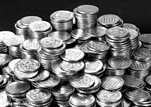
3=1+2=1+1+1
4=1+1+2=2+2=1+1+1+1
6=1+5=1+1+2+2=1+1+1+1+2=1+1+1+1+1+1=2+2+2
7=1+1+5=2+5=2+2+2+1=1+1+1+2+2=1+1+1+1+1+2=1+1+1+1+1+1+1
8=1+2+5=1+1+1+5=1+1+2+2+2=1+1+1+1+2+2=1+1+1+1+1+1+2=1+1+1+1+1+1+1+1=2+2+2+2
9=2+2+5=1+1+2+5=1+1+1+1+5=1+1+1+1+1+1+1+2=1+1+1+2+2+2=1+1+1+1+1+2+2=1+2+2+2+2
从以上这些算式中就可知道，用1、2和5这几个数就能以多种方式组成1~9的所有数。这样，我们就可以明白一个道理，人民币作为大家经常使用的流通货币，自然就希望品种尽可能少，但又不影响使用。
你知道吗？我们每个人身上都携带着几把尺子。
假如你“一拃”的长度为8厘米，量一下你课桌的长为7拃，则可知课桌长为56厘米。
如果你每步长65厘米，你上学时，数一数你走了多少步，就能算出从你家到学校有多远。
身高也是一把尺子。如果你的身高是150厘米，那么你抱住一棵大树，两手正好合拢，这棵树的一周的长度大约是150厘米。因为每个人两臂平伸，两手指尖之间的长度和身高大约是一样的。
要是你想量树的高，影子也可以帮助你的。你只要量一量树的影子和自己的影子长度就可以了。因为树的高度=树影长×身高÷人影长。这是为什么？等你学会比例以后就明白了。
你若去游玩，要想知道前面的山距你有多远，可以请声音帮你量一量。声音每秒能走331米，那么你对着山喊一声，再看几秒可听到回声，用331乘听到回声的时间，再除以2就能算出来了。
学会用你身上这几把尺子，对你计算一些问题是很有好处的。同时，在你的日常生活中，它也会为你提供方便的。你可要想着它呀！
弹三弦或拉二胡总是要手指在琴弦上有规律地上下移动，才能发出美妙的声音来。假如手指胡乱地移动，便弹不成曲调了。
那么，手指在琴弦上移动对发声有什么作用呢？
原来声音是否悦耳动听，与琴弦的长短有关。长度不同，发出的声音也不同。手指的上下移动，不断地改变琴弦的长度，发出的声音便高低起伏，抑扬顿挫。
如果是三根弦同时发音，只有当它们的长度比是3∶4∶6时，发出的声音才最和谐，最优美。后来，人们便把奇妙的数3、4、6叫做“音乐数”。
所以，古时候人们把音乐也作为数学课程的一部分进行教学。
音乐数3、4、6，是古希腊的大数学家毕达哥拉斯发现的。
相传，毕达哥拉斯一次路过一家铁匠铺，一阵阵铿铿锵锵的打铁声吸引了他。那声音高高低低，富有节奏。他不禁止步不前，细心观察，原来那声音的高低变化是随着铁锤的大小和敲击的轻重而变化的。受此启发，回家后他进行很多次试验，寻找使琴弦发声协调动听的办法。最后终于发现：乐器三弦发音的协调、和谐与否，与三弦的长度有关，而长度比为3∶4∶6为最佳。从此，人们便把3、4、6称为音乐数。
你有没有细心地注意过：擀面杖为什么做成中间较粗，两头较细？你又是否发现：擀面条的时候，为什么要两头用劲擀，而不是在中间用劲擀？看来这是生活中的小事，但里面却有着数学的道理呢！
大家知道：擀面从数学上来讲，就是要展开成一个平面。要展开得平平的，就一定要防止形成曲面。你看，有的人不会擀面，擀出来的面不均匀，十分难看。如果擀面杖是一样粗，那么由于两只手不可能在擀面杖上各个部位用的劲儿完全一样，这就容易发生翘面现象，而且等粗的擀面杖在向前推滚的时候，使两层面片之间接触非常紧密，以至没有相互移动的余地，容易粘住。当擀面杖两头稍细时，假如光是中间用劲，同样也适得其反，因为中间用劲，中间部位的平面展得大，两端展得小，面片就会像荷叶一样，从两边向中间卷起来，这就成了一个非展开面。只有在两头用劲擀时，使两头细的部位展开的面大一些，而中间部位由于擀面杖本来就粗，它可以顺从两头的力量，把面片擀得与两头同样程度，这样擀出的面片，又平整，厚度又均匀。
幼儿学数，总是和量连在一起的。比如，2只苹果，3支铅笔。到了小学，已经不满足于具体的量了，而喜欢学比较抽象的数。这时，2不仅可以表示“2只苹果”，还可以表示“2本书”、“2个小孩”等等，它的意义更广泛了。所以，从量到数，是认识上的一次飞跃。
老奶奶给小孙孙讲故事，常喜欢这样开头：
“从前……”
小孙孙听故事时，感兴趣的是故事的情节，而并不很关心故事发生的具体时间，从来也不追问：
“从前——是哪一年，哪一月？”
老师对同学进行文明礼貌教育：
“在公共汽车上见到老人应该让座。”这意思大家一听就明白，从来没人追问：
“这老人是70岁吗？”
“是80岁吗？”
在这里，重要的是说明要注意礼貌这件事，至于老人具体多大年纪，不必去追究。
日常生活中，我们常常需要超越具体的数量，一般地去表示某个量。上面讲的“从前”、“老人”都属于这种情况。这时，一般的表示比具体的表示具有更重要更普遍的意义。例如，乘法交换律是这样说的：“两个数相乘，可以交换它们的位置，乘积不变。”这可以用公式a×b=b×a来表示。这里a、b表示什么数？可以是整数，也可以是分数；可以是正数，也可以是负数，还可以为0。
数是用一个单位去量它的同类量而得到的结果，它的特点是抽象，正因为抽象，所以用处就更大。而字母又是数的进一步抽象，它可以更加一般地表示数以及数与数之间的运算规律，如果说一个数可以表示无穷多个有实际内容的量，那么，一个字母就可以表示无穷多个有实际意义的数，它的作用可说是无限的。
在小学，我们学的都是正有理数和零，也就是说，数的系统限制在非负有理数的范围里。到了初一，我们学习了负有理数。这样，数的范围就扩大到了有理数。非负有理数在同学们生活中用的很多，大家熟悉。而接触到负数则比较少，大家对它比较生疏。
现在，我们把大家带到“低温的世界”，看一看负数在那里的广泛应用。
人们在地球南极点附近，曾测得世界最低的气温是-94.5℃。据前苏联科学家称，他们曾在南极东方站测得-105℃的气温，不过这个数据未被国际上承认。
近年，科技界用人工方法创造出接近绝对零度（-273.15℃）的低温。
人的骨髓在-50℃的条件下，可保存6~12个月。
现今的低温技术已能使人类的血液、精子、眼角膜、皮肤、神经、骨骼、心脏等器官得以无限期地储藏。前两年，日本一家公司就开发了一种制冷达世界最低温度-152℃的冷藏柜。这种冷藏柜可以应用于保存人体细胞和血液，还可以应用于超导领域。后来这种冷藏柜已成批生产。
1969年6月4日，有个名叫索卡拉斯·拉米尔兹的人，从古巴叛逃至西班牙。他藏身于客机未加压的轮室内，飞机在9142米的高空飞行，他在-22℃的严寒下，忍受了8个小时。
人类早已踏上月球。在月球表面上，“白天”的温度可达127℃，太阳落下后，“月夜”的气温竟下降到-183℃。
低温能使正常温度下的物质发生离奇古怪的变化。例如，-38℃低温的金属锭，能“粉身碎骨”成为一堆粉末；-190℃低温下，空气即变成蓝色的液体，在液态空气环境中，石蜡能放出浅绿色的荧光，猪肉闪着黄色的光芒，橡胶将变得坚硬无比。
-269℃低温下，水银能变成被称为“超导”现象的无电阻固体。人们利用“超导”线圈发电机发电和用“超导”电缆输电，其功率消耗能降低数倍乃至数十倍。
人工降雨、人工降雪，就是把气态的二氧化碳置于-78℃以下低温环境中，在天空施布云层，而后逐渐解冻，使水从天降。
推动火箭升空的巨大动力，是-138℃的液态氧和-252℃的液态氮合成的混合燃料。
1967年1月，美国著名的心理学家詹姆斯·贝德福特患病住进了洛杉矶市郊疗养院。当他知道自己患了肺癌这个不治之症时，便下了决心，把自己所有的存款投入医院，请求将他冷冻处理。科学家们把他的体温降至-75℃，用铅箔将身子包起来，装进低温密封储藏仓，最后用-196℃液体氮急剧降温，几秒钟以后，贝德福特的身体变得像玻璃一样脆。贝德福特曾留下遗言：希望人类有一天能征服癌症，并能找到将冷冻的生命复活的方法，使他能从密仓里活着走出来。
由于生存的需要，动物肌体的构造为了适应客观环境，常常符合某种数学规律或者具有某种数学本能。许多事实是非常有趣的。
老虎、狮子是夜行动物，到了晚上，光线很弱，但它们仍然能外出活动捕猎。这是什么原因呢？原来动物眼球后面的视网膜是由圆柱形或圆锥形的细胞组成的。圆柱形细胞适于弱光下感觉物体，而圆锥形细胞则适合于强光下的感觉物体。在老虎、狮子一类夜行动物的视网膜中，圆柱细胞占绝对优势，到了晚上，它们的眼睛最亮，瞪得最大，直径能达3~4厘米。所以，光线虽弱，但视物清晰。
冬天，猫儿睡觉时，总是把自己的身子尽量缩成球状，这是为什么？原来数学中有这样一条原理：在同样体积的物体中，球的表面积最小。猫身体的体积是一定的，为了使冬天睡觉时散失的热量最少，以保持体内的温度尽量少散失，于是猫儿就巧妙地“运用”了这条几何性质。
我们都知道跳蚤是“跳高冠军”。1910年，美国人进行过一次试验，发现一只跳蚤能跳33厘米远，19.69厘米高。这个高度相当于它身体长度的130倍。按照这样的比例，如果一个高1.70米高的成年人，能像跳蚤那样跳跃的话，可以跳221米高，相当于70层楼的高度。
蚂蚁是一种勤劳合群的昆虫。英国有个叫亨斯顿的人曾做过一个试验：把一只死蚱蜢切成三块，第二块是第一块的两倍，第三块又是第二块的两倍，蚂蚁在组织劳动力搬运这些食物时，后一组均比前一组多一倍左右，似乎它也懂得等比数列的规律哩！
桦树卷叶象虫能用桦树叶制成圆锥形的“产房”，它是这样咬破桦树叶的：雌象虫开始工作时，先爬到离叶柄不远的地方，用锐利的双颚咬透叶片，向后退去，咬出第一道弧形的裂口。然后爬到树叶的另一侧，咬出弯度小些的曲线。然后又回到开头的地方，把下面的一半叶子卷成很细的锥形圆筒，卷5~7圈。然后把另一半朝相反方向卷成锥形圆筒，这样，结实的“产房”就做成了。
什么是雾？雾是很小的水珠。既然是水珠，就有一定的重量，而且比空气重，就该落下来，为什么会飘浮在空中？
是的，雾珠受到地心的吸力，有一定的重量，不过，空气对它又产生阻力。要想回答雾珠为什么飘浮在空中这个问题，就得研究重力和阻力的关系。
雾珠所受到的地心吸力，是与它的质量成正比的；而质量又是与它的体积成正比的。所以雾珠所受到的重力与它的体积成正比。
再研究雾珠所受到的空气的阻力。雾珠越小，阻力也越小。所以，雾珠所受到的空气阻力是与它的表面积成正比的。
到一定程度时，它所受到的空气阻力便能接近所受到的重力，从而使雾珠飘浮在空中。
灰尘能在空中飞舞不落，金属微粒能在水中悬浮不沉，都是和雾珠能飘浮在空中一样的道理。高空中的云，就是随气流飘浮的小水滴和冰晶群，因为它们太小了，所以落不下来。有时，用飞机在云中喷上干冰等物质，就能使小水滴和冰晶群结合起来，使它越变越大。当水滴和冰晶的直径增大到一定程度时，由于空气的阻力小于它的重力，它们便从天上落下来，这就是人工降雨。
气象学家为了计算某地区的降雨率，需要精确地了解该地区云雾中雨滴大小分布。雷达信号的传送也与雨滴的大小有密切的关系，雨滴越大，信号畸变就越严重。可见，雨滴虽小，关系甚大。
太平洋夏威夷群岛地区的阳光特别好，它东海岸的降雨量很高，每年有762厘米的雨从这里的上空的带状云中降落下来，从而创造了新的降雨纪录，降下了世界上最大的雨滴。根据科学家的研究，一般热带的雨滴的直径很少超过2.5毫米，这样雨滴的体积不超过8.2立方毫米。1985年，美国科学家发现上述带状云降的雨滴，有的直径竟达8毫米，这样雨滴的体积应为268.1立方毫米。它的体积竟是一般雨滴体积的33倍，是目前世界上所发现的最大的雨滴。
鸟蛋，包括鸡蛋、鸭蛋、鹅蛋，形状类似，但大小各不相同。
鸵鸟蛋，是世界上现存的最大的鸟蛋。一只鸵鸟蛋有15~20厘米长，1.65~1.76千克重，一只鸵鸟蛋等于33~35个鸡蛋那么重。鸵鸟蛋的蛋壳很厚，有2.5毫米，因此非常牢固。一个94千克重的大胖子站到这个鸵鸟蛋上，也不会把它压破。由于蛋壳太厚，而且蛋又太大，如果放在水里煮的话，得花40分钟才能煮熟。
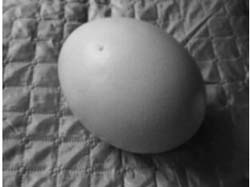
平常我们总认为麻雀是很小的飞禽，可是最大的蜂鸟，还不及中等麻雀大，而最小的蜂鸟只有麻雀的1/10。蜂鸟下的蛋只有豌豆那么大，重量只有0.2克，它是鸟蛋中最小的一种蛋。250个蜂鸟蛋才抵得上一个鸡蛋重，8500个蜂鸟蛋才抵得上一个鸵鸟蛋。
你经常吃鸡蛋，恐怕没有研究过鸡蛋能不能直立的问题。日本有一对父子对竖蛋问题研究了50年，居然发现了其中的一些规律。粗看蛋壳，似乎是光滑的，用手仔细抚摸蛋壳面，就会发现蛋壳表面是凹凸不平的。若在放大镜下观察，可看到蛋壳上有绵延起伏的“山岭”。“岭”的高度约为0.03毫米，顶点之间相距0.5~0.8毫米。如果蛋壳表面有三个“山岭”，这三个山岭构成一个三角形，且这个鸡蛋的重心又落在这个边长为0.5~0.8毫米的三角形内，这个鸡蛋就可以直立起来。鸡蛋的这个竖立特性是符合几何性质的。在几何中有这样一条性质：过不在一直线上的三点可以确定一个平面。蛋面上这三个凸点可构成一个三角形，三顶点不在一直线上，所以过这三点可确定一个平面。因为重心落在三角形内部，根据重心性质，鸡蛋就能比较平稳地站立了。据试验，一般说来，刚生下来的蛋不易竖立，过四天至一星期后，就比较容易竖立了。但日子过长，竖立又变得困难。另据我国天津大学申泮文教授试验，鸡蛋下头朝下更容易立得稳。
马戏团正在演出，节目是“小狗做算术题”。只见表演场上放着一个矮矮的架子，架子上插着小木板做成的“数牌”，上面分别写着1，2，3，4，5，6，7，8，9。乐声奏起，驯兽员牵着一只小狗走向木架。小狗后腿弯曲坐在场上，环顾观众，样子很从容。
一会儿，驯兽员发出一声口令，小狗走向木架，衔起一块数牌。驯兽员取过数牌，向四周观众显示数牌上的数码“3”。接着发出一声口令，只见小狗昂起头来，高声叫了三次。周围观众报以热烈的掌声。如是表演了几次。令人发笑的是，有一次小狗“算”错了，挨了批评，驯兽员令他重“算”一次，小狗及时纠正了自己的错误。
小狗是否真的识数，这不得而知。不过，根据科学家的实验，动物“识数”是完全可能的。到目前为止，会“识数”的动物已经有猿猴（首先是黑猩猩）、老鼠、乌鸦、喜鹊。加拿大圭尔夫大学动物学家霍克曾进行过一次实验，训练浣熊数数，竟然取得成功。
大家知道，熊的行动缓慢、迟钝，一副笨拙的形象。所以，有时会听到这样的骂声：“你真笨得像头熊！”其实熊并不见得那么笨。有一只名叫“罗杰”的浣熊接受驯兽员的训练。驯兽员经过观察，发现罗杰最喜欢吃葡萄果。于是他在几只晶莹透明的有机玻璃块里，分别镶进去一个葡萄果。罗杰看到这些新鲜美味的葡萄果，急于要吃，驯兽员就利用这种形势，做出某种手势或发出某种口令，罗杰就根据这些指令取出相应数目的玻璃块。经过苦心训练，罗杰终于能完成1~5的数数动作。有趣的是，和小狗识数一样，罗杰有时也有失误，但一经主人提示，它就能马上改正过来。
随着浣熊的接受信息并产生熟练的动作以后，驯兽员又将玻璃块里面的葡萄果换成小玩具，浣熊也能够完成上述动作。这说明浣熊的接受能力已从葡萄果这种特殊的事物扩大到较一般的事物了。这样，是不是可以说，浣熊对1~5的数字概念是明白的。不过，当数字超过5时，罗杰就无能为力了。动物学家认为，浣熊的平时活动，并不考虑“数目”，它和其他动物一样，一切行动都是本能的。
大自然中存在着许多周而复始、不断循环的现象。
春夏秋冬，暑往寒来，一年四季不停地循环着。
日出而作，日落而息，永无止境。
大江东去，滔滔不绝，水从何来？原来地球上的水遇热，化为水汽，水汽在高空中遇冷结为冰雪，降落地面。高山积雪，遇热又化成水，便成为江水之源。
1869年，俄国化学家门捷列夫把元素按原子量进行排列，发现元素的性质按照一定的顺序表现出周期性，从而发明了周期律。
血液在人体中不停地进行肺循环和体循环，把营养和氧气输送到身体的各部分，从而维持人的生命。
近年来，科学家们用统计的方法研究人体的规律，表明：
上午9~10点是人体体能高潮，精力集中，记忆力强的时期；
12~14点是体能低潮时期；
15点又出现高峰；
17~19点血压较高，情绪容易急躁；
20~23点体能又出现高峰；
23点后进入低潮；
早晨4点体能处于最低潮，但听力敏锐；
7~8点激素分泌达到高峰。
人的体能在一年中有两次高峰，一般在4~6月和8~10月间。据统计，世界体育运动纪录的90%是在这两个时期中创造的。在人的一生中，体能和智能将出现两次周期性的高潮，第一次是35~45岁，第二次为55~60岁。诺贝尔奖金的获得者，绝大多数是在第一个高潮时期做出卓越的成绩的。
通过研究，科学家们发现美国小麦丰收周期为9年，中国大兴安岭松子丰收周期为6年，地球干旱周期为22年。
地震对人类生命财产的危害极大。为了研究地震的活动规律，预测预报地震等地质灾害，需要了解某地的地震史情况。有一种“最大树龄法”可以根据树木年轮来确定古地震发生的年代。
原来，生长几年的树木，就可以在它的木质部的横断面上清楚地显示几层同心圆，每一个圆就表示树木生长了一年。这些圆圈就叫做年轮。在正常情况下，树木每年生成一个年轮。一般来说，一棵树的主干基部的年轮数目，就是这棵树的年龄大小。由主干基部向着枝冠方向发展，年轮的数目逐渐减少。
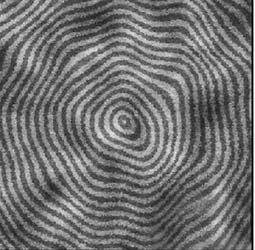
树木年轮生长的宽窄与气温降雨量等因素紧密相关。这就是说，气温适宜，雨量充沛，树木生长就快，年轮就宽；反之，树木生长就慢，年轮宽度就窄。在局部地区生长的树木，若受到地震、泥石流、滑坡等自然因素影响时，树木的年轮宽度也随之发生相应的变化。
生长在古地震断裂面上的树木，是在古地震断裂形成之后才开始生长发育起来的树木，而这种树木的最大树龄就相当于古地震形成的年代。一般可以通过所取树干基部年轮圆盘面就可直接判读出年轮的数值，以确定古地震发生的年代。也可以通过以下数学公式来推算古地震发生的年代：
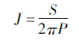
式中，J表示古地震形成距离现在的年数，P为被测树木年轮年平均生长宽度，S为被测树木最大直径的树干基部的周长。
例如，1982年，从我国西藏当雄北一带古地震断裂面上生长的香柏树中，取出其中的一棵，测得它的P=0.22毫米，S=80厘米，则可算得：
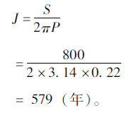
据这个地区有关地震史料的记载，在1411年前后，该地区确实发生过8级左右的强烈地震，两者相当吻合。
研究结果表明，利用树木年轮研究和确定几十年、数百年甚至千年以上的古气候变迁、古地震发生年代，比运用其他方法具有简便、经济、可靠等优点。可以相信，随着研究的深入，人们将从树木年轮中开发出更多的科学信息。
足球运动员开球或发球时，对方球员必须离足球9.15米以上。为了表示这个范围，人们就在足球场中央画个“中圈”，每场比赛都从这里开球。罚球时，也是这样。以罚球点为圆心，向外画罚球弧，半径也是9.15米。这9.15米有什么根据么？原来足球运动起源于英国，英国人用的长度单位是“码”。当初规定开球、罚球时，对方运动员必须离足球10码以外。而1码等0.9144米，约合0.915米。10码换算成公制，长度就是9.15米。
拳击比赛，优胜者不论得到多少分，都以20分计算，而失败者的得分则需代入下列公式计算：
失败者得分=20-（优胜者实际得分÷3）。
例如，优胜者实际得18分，失败者的得分就是：
20-（18÷3）=20-6=14（分）。
如果胜利者的得分不是3的倍数，计算时先要把它的得分适当进行增减，使它成为3的倍数，然后再代入公式计算。比如，胜利者得16分，则先将16变为15，再代入公式，即得
20-[（16-1）÷3]=20-15÷3=20-5=15（分）。
即失败者得15分。
美国布鲁克林学院物理学家布兰卡对篮球运动员投篮的命中率进行了研究。他发现篮球脱手时离地面越高，命中率就越大。这说明，身材高对于篮球运动员来讲，是一个有利的条件，这也说明为什么篮球运动员喜欢跳起来投篮。
根据数学计算，抛出一个物体，在抛掷速度不变的条件下，以45度角抛出所达到的距离最远。可是，这只是纯数学的计算，只实用于真实的条件下。而且，抛点与落点要在同一个水平面上。而实际上，我们投掷器械时并不是在真空里，要受到空气阻力、浮力、风向以及器械本身形状、重量等因素的影响。另外，投掷时由于出手点和落地点不在同一水平面上。而形成一个地斜角（即投点、落点的连线与地面所成的夹角）。出手点越高、地斜角就越大。这时，出手角度小于45度，则向前的水平分力增大，这对增加器械飞行距离有利。下面是几种体育器械投掷最大距离的出手角度：
铅球38~42度；
铁饼30~35度；
标枪28~33度；
链球、手榴弹42~44度。
人们不喜欢13这个数。上海人讲“十三点”，是一句骂人的话，意思是“呆头呆脑”、“傻里傻气”。
在科学发达的今天，伦敦的住宅区就无法找到门牌号为13的公寓。影剧院里也没有第十三排。宴席上第十三个位置总是摆着一张独特的桌子。
在十四届世界杯足球赛上，阿根廷足球队开始战绩不佳，后来他们战胜前苏联队，队员们兴奋之余纷纷说：
“我们教练这场比赛没让13号上场是英明的决策。”原来比赛那天正好是1990年6月13日，阿根廷队忌讳13这个“不祥”的数字，教练比拉尔多为了稳定军心，忍痛让主力后卫13号洛伦索坐在替补席上，不让他上场。
为什么人们对13这个数如此回避呢？说法很多。
有一种说法是：我们现在通用的十进制是以数10作为基础的，可是在古罗马则是采用十二进制算法的。到后来，把12作为“一打”的计算方法为欧洲许多国家所采用。因此，12成了家喻户晓的进位制的殿军。这样一来，人们对12以后的数就产生一种莫名其妙的感觉，以致认为13这个数是个不祥的数，是个危险的数，所以后来人们就忌讳使用这样的数。
另一个理论是来自柏林一位医生威廉姆·福利斯。他认为人类有史以来的一切活动和一切对象皆可以用一个简单的公式“23x+28y”来表示：
一年有365天，而365=23×11+28×4；
法国大革命开始于1789年，而1789=23×23+28×45；
人类细胞核中有46对染色体，而46=23×2+28×0；
《圣经》中动物的数目是666，而666=23×18+28×9。
然而，“不幸”的事终于发生在13这个数上：
13=23×3+28×（-2）
这个式子中出现了负数，它是“不幸”的。当然，这些都是一些无稽之谈，是没有科学根据的。
在测量长度的历史背后，有许多引人入胜的故事。各种测量方法明显反映出当时社会的需要；研究过去使用的测量方法，可以使我们更加了解今天使用的度量衡。
许多长度测量单位都是以人的身体为基准的。例如埃及人曾用下面的长度测量单位：
指幅=1根手指宽
掌宽=4指幅
手宽=5指幅
腕尺=由肘至指尖的距离=28指幅
罗马人使用脚长及走一步的距离作为长度测量单位，后者是指脚跟从离开地面至下一次接触地面间的距离。罗马的哩相当于1000步，用来测量他们的军队行进了多远。